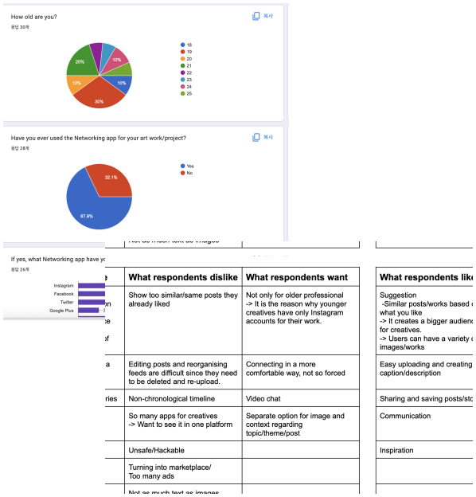
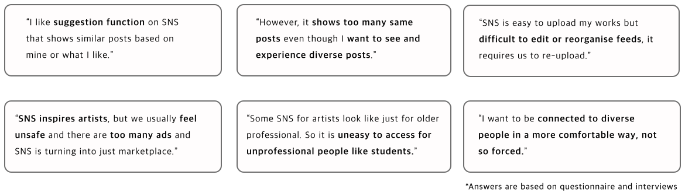
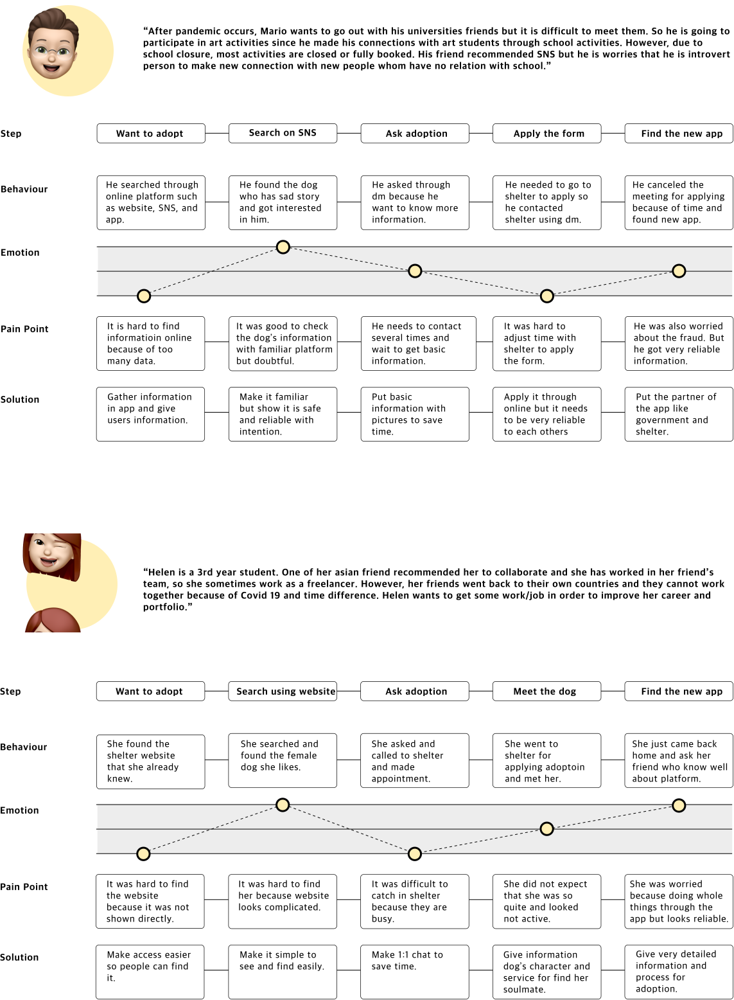
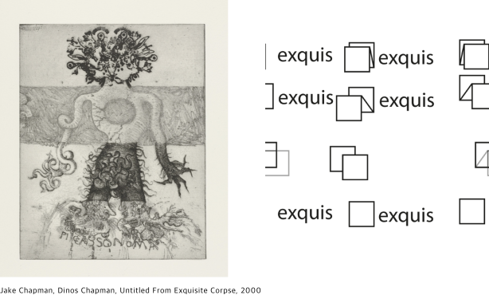

Exquis
How to kickstart Gen Z’s Career?
Team project at school
Role
Research
Ideation
Product Design
Ideation
Product Design
Project Time
4 weeks
Overview
After Covid 19 occurred, many people have been facing and suffering from various problems. For Gen Z, they are facing and worried about unemployment, social interests and isolations. Exquis is a social networking service that Gen Z ranging from students to professionals can have new strong connections, explore, get inspiration, and collaborate with interesting feature only in Exquis in order to kickstart their career.
Define
Brief
This project is team project with each student in the different course. We were given the challenge to develop the project relating to Gen Z. Many Gen Z are now facing many problems such as inequality, unemployment, social interests and isolation. During such a difficult situation as the pandemic that we are all facing, we thought that networking app is needed for young creators to share their creative works and collaborate with users.
Approach
We firstly approached this project from researching that GenZ have faced. There were many problems but we focused on the anxiety that Gen Z could feel from unemployment and isolation by the pandemic. After that, we communicated and decided what product were we going to make in order to deliver the purpose well to our users. Before doing this project, we attended the session about collaboration and teamwork. We learned how the collaboration and teamwork is important.
Research
Research Methods : Primary research, Secondary research, 1:1 Interviews, Competitors research

I surveyed 30 people of Gen Z creators/artists/art students in order to find out social networking service use for art works.
- Over 65% use networking app for their art works and projects
- Usually use Instagram, Pinterest and Facebook for inspiration, communication and references
- Almost 70% post their works on Networking apps
- They want easy instrunction on the app
- Most don’t want to link their personal accounts to work accounts. It means they need separate space to post and share their works and projects.
- Over 65% use networking app for their art works and projects
- Usually use Instagram, Pinterest and Facebook for inspiration, communication and references
- Almost 70% post their works on Networking apps
- They want easy instrunction on the app
- Most don’t want to link their personal accounts to work accounts. It means they need separate space to post and share their works and projects.



‘‘How can people connect to diverse people in a comfortable way?’
‘How can Gen Z feel comfortable to kickstart their career?’
‘How can Gen Z learn and experience diversity from SNS?’
Insight
Many Gen Z creators/artists/art students use networking services while they do projects, collaborate with others, work, or even look for a job. While doing research, we found that many artists are desiring for communication from their isolated circumstances in pandemic. There are many social networking platforms, however some are quite inaccessible for Gen Z, mostly younger artists, to get inspiration or communicate. They need more young but professional images of social networking services, however they do not want the app like Tiktok which is for like influencers and has many ads.
UX Challenge
Social networking service would focus on three points which are communication, collaboration and career. It aims Gen Z to use easily, feel comfortable and not seem for order professional. Therefore, Gen Z would be able to communicate and collaborate with many diverse artists around the worlds and also they can get healthy and successful career.
Analysis
Persona
Journey Map

Design
Logo and concept

Our team was inspired by an exquisite corpse, also known as exquisite cadaver, that is a method by which a collection of words or images is collectively assembled. We thought it is quite similar to our concept, collaborating and sharing their works.
We experimented with the various name of our product and logo design such as Xquis, exquisi and exquis. We chose the name of the app as exquis, and our logo was inspired by the company named best workspaces which has animated logo. We made our logo looks like folding paper since, in the game(exquisite corpse), the paper needs to be folded to conceal his or her contribution for the next player. So we made two types of the logo which were static and animated.
Core Needs - Solution - Design